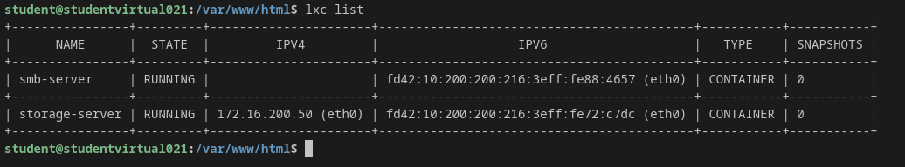
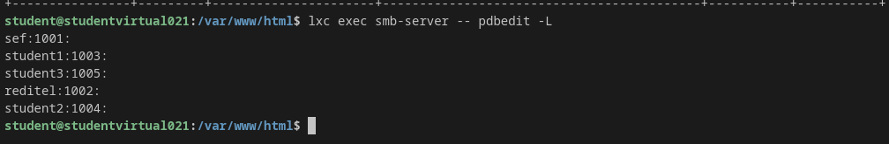
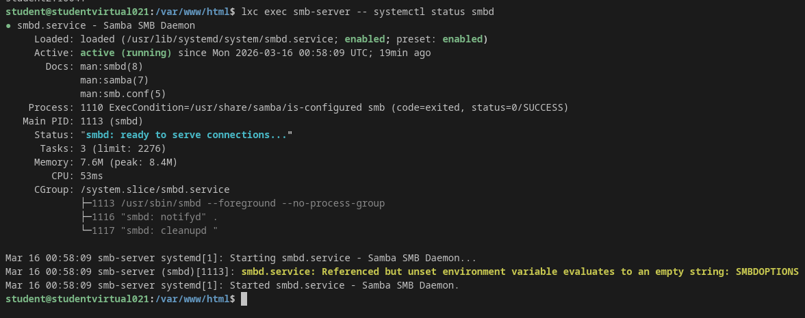
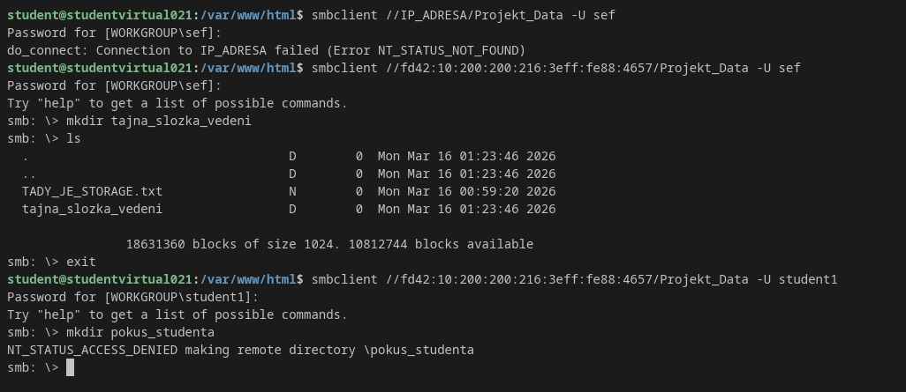

Cílem tohoto projektu bylo navrhnout a implementovat infrastrukturu založenou na systémových kontejnerech (LXC/LXD), která poskytuje sdílené síťové úložiště pomocí protokolu SMB (Samba). Architektura plní následující požadavky zadání:
Infrastruktura je navržena s ohledem na bezpečnost a výkon. Byla využita nativní funkcionalita LXD pro sdílení blokových zařízení (Bind Mount), která umožňuje sdílet datový adresář přímo do kontejneru bez nutnosti mezivrstvy v podobě síťových protokolů.
/srv/projekt_data)./mnt/storage).vedeni má práva pro čtení i zápis, skupina praxe má oprávnění pouze pro čtení.Vytvoření sdílené složky na hostiteli a její namapování do nově vytvořeného kontejneru.
sudo mkdir -p /srv/projekt_data
sudo chmod 777 /srv/projekt_data
lxc launch ubuntu:24.04 smb-server
lxc config device add smb-server spolecne_data disk source=/srv/projekt_data path=/mnt/storageNásledující příkazy byly provedeny uvnitř kontejneru smb-server. Zahrnují vytvoření skupin, uživatelů bez shell přístupu (pro vyšší bezpečnost) a nastavení SMB hesel.
apt update && apt install samba acl -y
groupadd vedeni && groupadd praxe
useradd -M -s /usr/sbin/nologin sef
useradd -M -s /usr/sbin/nologin reditel
useradd -M -s /usr/sbin/nologin student1
useradd -M -s /usr/sbin/nologin student2
useradd -M -s /usr/sbin/nologin student3
usermod -aG vedeni sef && usermod -aG vedeni reditel
usermod -aG praxe student1 && usermod -aG praxe student2 && usermod -aG praxe student3
for u in sef reditel student1 student2 student3; do (echo "heslo123"; echo "heslo123") | smbpasswd -s -a $u; doneNastavení linuxových práv na připojené složce a definice sdílení v konfiguračním souboru Samby.
chown root:vedeni /mnt/storage
chmod 775 /mnt/storage
cat <<EOF >> /etc/samba/smb.conf
[Projekt_Data]
path = /mnt/storage
valid users = @vedeni, @praxe
write list = @vedeni
read list = @praxe
force group = vedeni
EOF
systemctl restart smbdNíže jsou uvedeny výstupy, které prokazují úspěšné nasazení infrastruktury a správné fungování přístupových práv.



